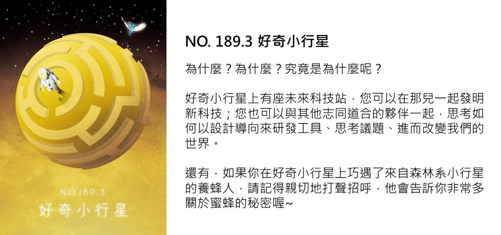
NO. 189.3 好奇小行星
★成為安全設計師
▲301-01主題攤位
安全耐震我的家－成大土木線上實驗課程
地點：3樓 性別展內
活動時間：11/6-7 10:00-17:30
設攤單位：成大土木系✕小史塔克實驗室
介紹：
台灣是個多地震的國家，建物耐震問題顯得特別重要，成大今年特別開啟線上實驗課程計畫，利用線上4K影片以及和小史塔克實驗室聯手開發的居家實驗教具，讓國小到國高中、甚至大一，任何一位同學對於材料力學、耐震設計有興趣的同學，都可以藉由這個機會自主學習
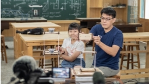 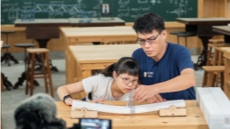
★未來科技發明站
▲302-01主題攤位
好奇小行星_未來科技發明站
地點：3樓 西側走廊
時間：11/6-7 10:00-17:30；11/6 18:30-21:00
設攤單位：史汀實驗室
介紹：
2021臺灣科學節，史汀正式登陸好奇小行星，在上面蓋出「未來科技發明站」，帶著星球上的小朋友一起發明新科技！在這座發明站中有兩個亮點：一是展示「創新科技教育」的學習概念，從每一張圖像背後的故事和hashtag，認識史汀的教育理念！二是預計辦理12場的「科技電玩Ｘ導電方向盤」工作坊，透過連接電線至各種可以導電的日常物品，變成與電腦互動，輸入訊號的方向盤！製作自己的方向盤，玩一場熱血的遊戲吧！
▲302-02工作坊
科技電玩Ｘ導電方向盤
地點：3樓 西側走廊
時間：每場約60分鐘
場次：11/6 （六） 10:00, 11:00, 14:00, 15:00, 16:00, 19:00, 20:00
11/7 （日） 10:00, 11:00, 14:00, 15:00, 16:00
活動人次：採預約制，每場10人(建議6歲以上)
費用：每人100元
活動單位：史汀實驗室
介紹：
Makey Makey 是一款提供給喜歡打造東西的創作者的創作工具，透過連接電線至各種可以導電的日常物品，可以讓物品變成與電腦互動，輸入訊號的介面工具。本工作坊將會以電動玩具的風格進行關卡佈置，帶著小朋友回到尚未出生，電動玩具發展的啟蒙年代，進行電玩的搖桿製作與玩樂。
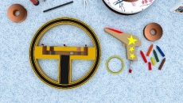 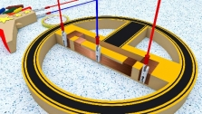
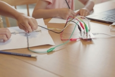 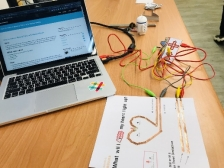
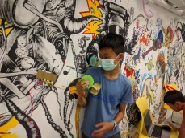 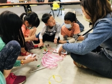
★創造性別平權✕計畫
▲302-03主題攤位
好奇小行星_創建性別平權X計畫
地點：3樓 中央走廊
活動時間：11/6-7 10:00-17:30，11/6 18:30-21:00
介紹：
本計畫期望運用國立臺灣科學教育館常設展「設計我們的世界 -科技性別化創新」作為教育推廣計畫核心的文本，並利用博物館場域進行以「設計導向的工程創新教育」為核心的科普教育推廣計畫，透過計畫建立教育者的共學社群並設計一系列創新的教學活動，實踐性別化創新議題的社會影響力。
設攤單位：科教館✕史汀實驗室
▲302-04工作坊
性別展工作坊：與樹共生之坡
地點：3樓 性別展內
時間：每場約90分鐘
場次：11/6 （六）10:00, 19:00 ；11/7 （日）14:00
活動人次：採預約制，每場15人(建議6歲以上)
費用：50元
介紹：
一起來思考人類與山林的共存議題！
坡道開發的過程中，要如何兼顧環境與道路安全呢？雖然叫陡峭的坡道可以省去很多時間，也可以讓路徑最短，但這其中可能暗藏很多危險。我們用多元媒材模擬道路，並在開發的過程中，盡量避免破壞坡道上的樹林，以乒乓球、彈珠模擬成不同的交通工具，嘗試創造一條安全平穩回家的道路。
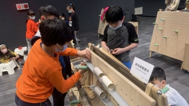
性別展工作坊：我的設計挑戰
地點：3樓 性別展內
時間： 每場約90分鐘
場次：11/6 （六）10:00, 19:00；11/7 （日） 14:00
活動人次：採預約制，每場15人(建議6歲以上)
費用：50元
介紹：
歡迎你來進行設計思考大挑戰！我們準備了四種類型的卡牌：器物卡、人物卡、情境卡與限制卡。體驗者根據所抽到的卡牌來進行任務挑戰，例如：我要設計出「一種發光裝置」給「嬰兒」用，在 「地震」的時候，這個裝置必須「方便攜帶」。由於卡牌設計提供學習者一個思考的鷹架， 因此降低了學習者進入以使用者為核心的設計思考門檻！
性別展工作坊：手術挑戰任務
地點：3樓 性別展內
時間： 每場約90分鐘
場次：11/6 （六）14:00；11/7 （日） 10:00
活動人次：採預約制，每場15人(建議6歲以上)
費用：50元
介紹：
手術工具就像醫生手的延伸，透過精密細緻的工具，才能讓手術成功率上升。
在研發工具的過程中，需要思考要如何去設計一個適合的器具，協助完成想要達成的目的。在手術過程中，首先要克服的問題是什麼？哪些形狀、功能，是可以符合的。體驗者將直接進入器官手術的情境中，嘗試動手設計出一個好用的工具，反覆驗證解決問題。
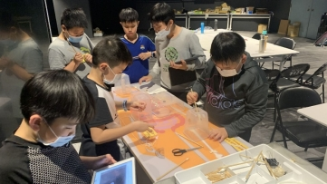
性別展工作坊：地震緊急任務
地點：3樓 性別展內
時間： 每場約90分鐘
場次：11/6 （六）14:00；11/7 （日） 10:00
活動人次：採預約制，每場15人(建議6歲以上)
費用：50元
單位：科教館X史汀實驗室
介紹：
台灣位於板塊的交接處，因此地震是全年齡族群共同的話題。
當房屋因為地震劇烈搖晃後不幸倒塌時，救難隊要如何救出住在高樓的受困民眾呢？鋼索和擔架是非常常見的救難工具，除了可以運送人類從高處下來，還可以運送動物。現場有一些不同重要的物件，試試看設計出一個適合的擔架，以協助救難隊完成救災任務！
★森林系小行星養蜂人
▲303-01工作坊
《蜜蜂生態導覽解說》導覽
地點：3樓 東側走廊與蜂陽台
時間：每場約60分鐘
場次：11/7 （日） 10:00-11:00 15:00-16:00
人數：採預約制，每場30人
費用：每人100元(建議5歲以上)
講師：城市養蜂 蔡明憲
介紹：
近年來氣候變遷、食安問題頻傳，環境與食品議題益發重要，透過科教館蜂花園計畫，帶領大家了解蜜蜂生態、食安、環境相關議題，引導大家重視環境生態與土地的價值。